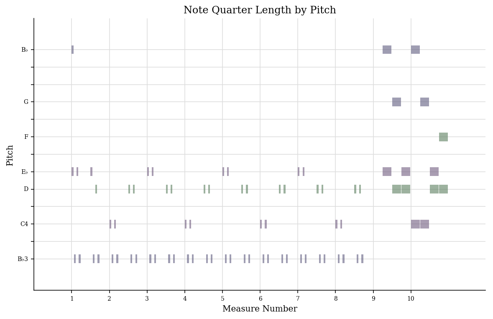
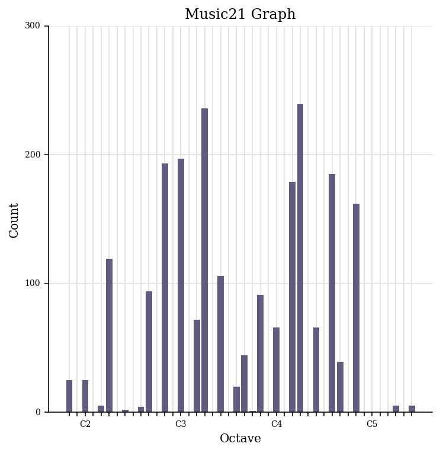
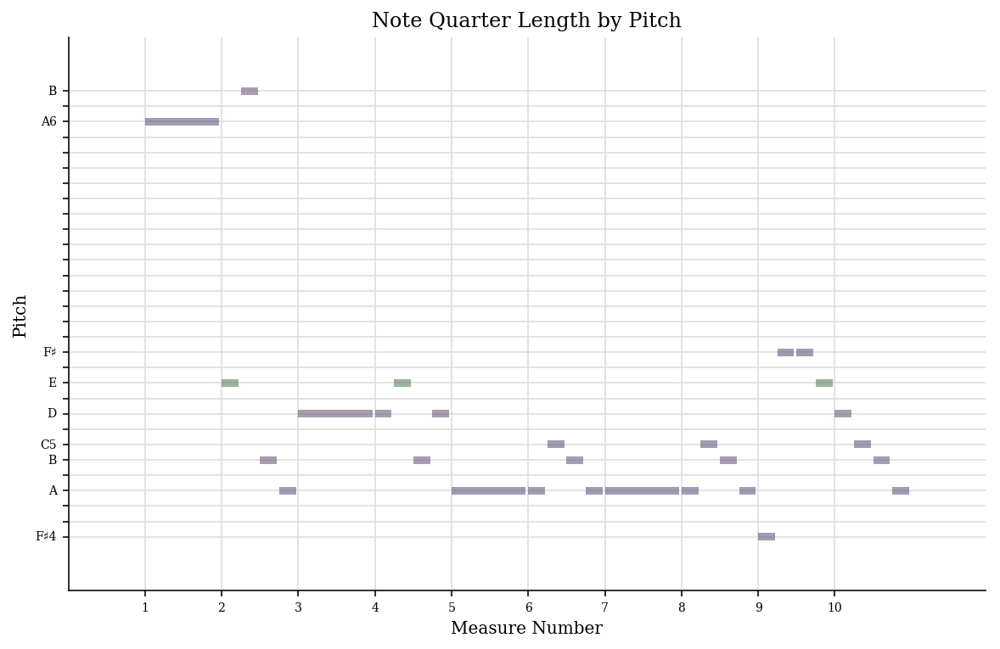
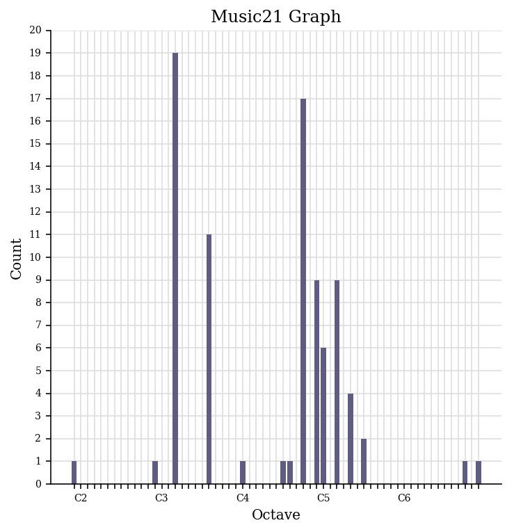
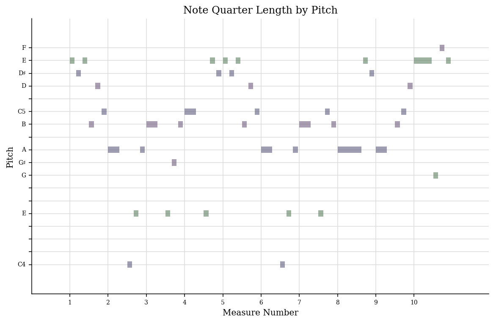
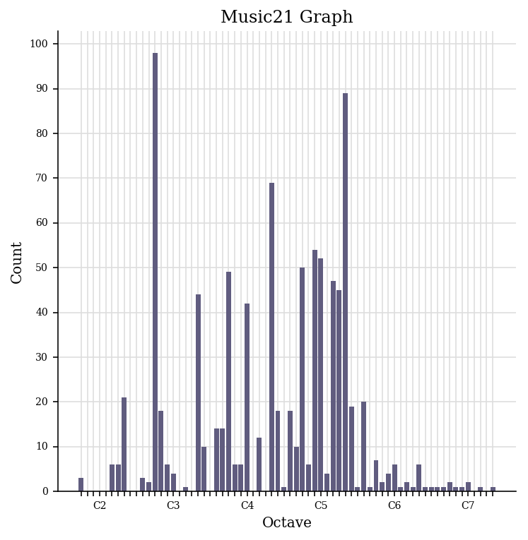

This page shows off my data set which includes:
Andrew McMahon, Jacks Mannequin, Dark blue.
This is an alternative rock song by an American band, Jacks Mannequin: composed by Andrew Mcmahon. Here is a visualization of a piano roll and histogram created using music21


Jacques Offenbach, The Can Can.
This is a piano score that I transcribed, here is a visualization of a piano roll and histogram created using music21


Ludwig Van Beethoven, Fur Elise
This is an iconic piece of piano music, here is a piano roll and histogram created using music21

